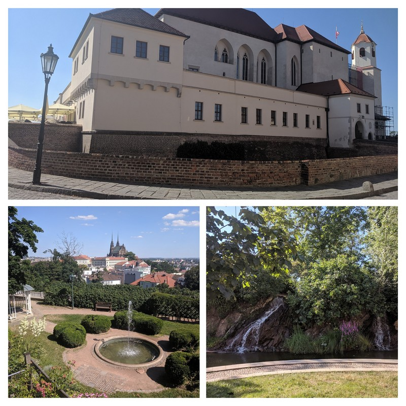
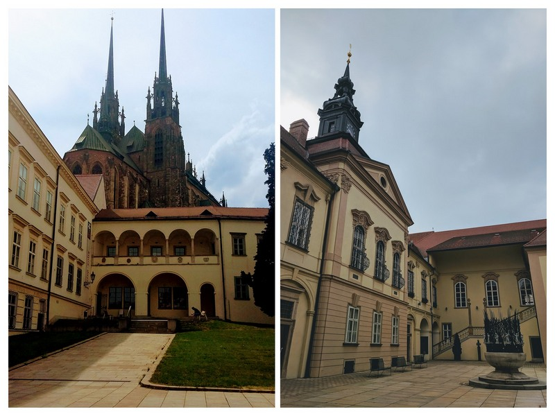
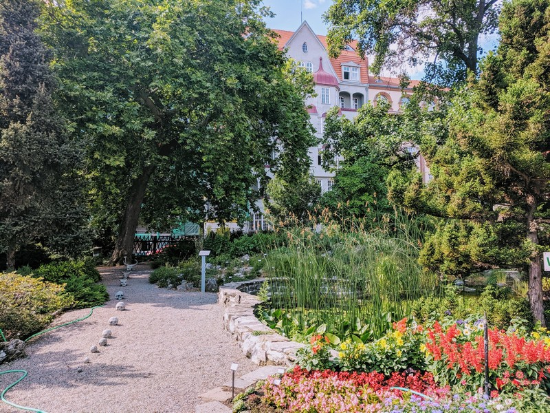
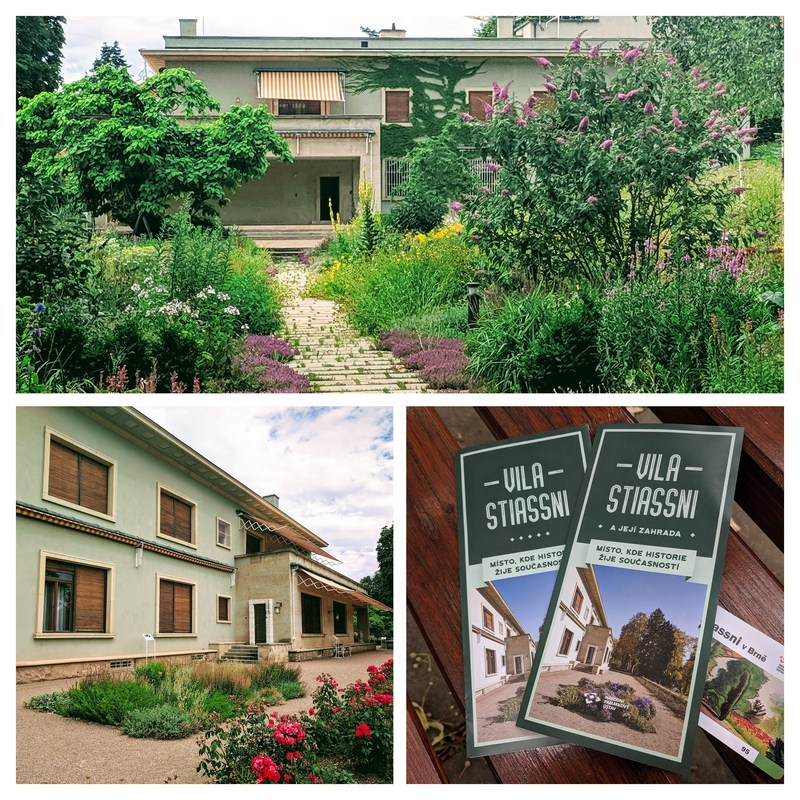
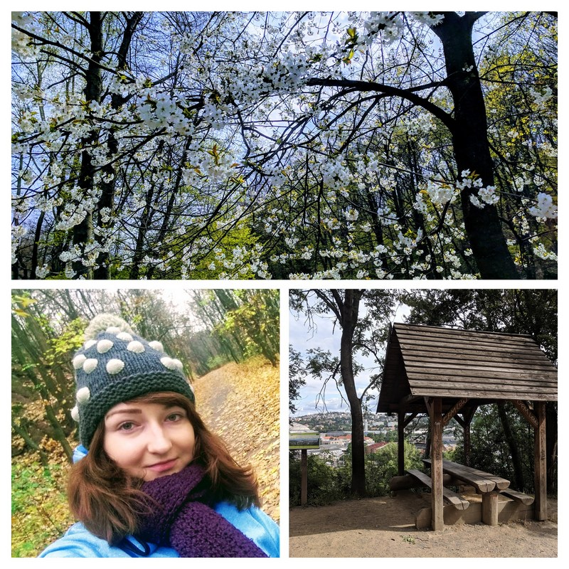

Nápad na tento článek nosím v hlavě už strašně dlouho a před nějakým rokem bych si byla bývala ráda něco takového sama přečetla. Zřejmě se v něm nedozvíte nic vyloženě objevného, všechno jsou to poměrně známá a oblíbená místa navštěvovaná nejednou matkou, nicméně třeba sem zabloudí někdo, koho naše vycházky inspirují k vybočení ze svých zajetých tras :-)
Špilberk
“Špilas” asi netřeba představovat. Vycházka k této brněnské dominantě je skoro povinnou záležitostí. Pro nás věčně vyčerpané matky je trochu nevýhoda, že je to do kopce, ale zase si pak snáze ospravedlníte tu tabulku čokolády, kterou jste snědly, zatímco dítě po obědě spalo 8-) Vyšplhat nahoru se dá z různých stran - já ráda volím výšlap z ulice Pellicova, která je sama o sobě pěkným a klidným místem na procházku a výstavkou architektonicky zajímavých budov. Další výhodou Špilasu, zejména teď v létě, je spousta laviček k odpočinku/nakojení/přebalení a stín stromů. A samozřejmě krásný výhled do širého okolí.

Centrum
Když se zrovna nepotřebuju uklidnit pohledem do zelené :D, ráda vyrážím na procházku centrem města. Obvykle zahajujeme naši trasu na České a odsud už se pak proplétáme uličkami dle nálady. Často takovou procházku spojujeme s nákupem nebo domluveným obědem s někým známým. V sezóně si zpříjemňujeme venčení zastávkou u Božského kopečku a nakupováním ovoce a zeleniny na Zelňáku, jehož atmosféru mám moc ráda. Bloumáním po centru jsem už objevila nejedno hezké místo, jehož existence mi byla dosud skryta - namátkou třeba Biskupský dvůr, nádvoří Nové radnice (které je průchozí až na Husovu - objev roku!) nebo prostranství vedle Moravské galerie. Tip pro kojící matky: Na všechna tato místa se také můžete uchýlit, pokud potřebujete dítě v centru v ústraní nakrmit ;-)

Botanická zahrada Masarykovy univerzity
Celkem fajn místem ke krátké procházce je i botanická zahrada, která patří k areálu přírodovědecké fakulty MUNI. Obvykle tu nebývá moc lidí a najde se i klidné posezení ve stínu stromů. No a když dítě spí, můžete se učit poznávat nové rostliny nebo třeba risknout nějakou tu výstavu, co se tu občas konají :D

Vila Stiassni
Toto není procházka na každý den, zejména z toho důvodu, že do zahrady se platí (byť symbolické) vstupné a hlavně bývá otevřeno jen párkrát do týdne, proto si raději pohlídejte otevírací dobu na internetu. Každopádně pokud jste zde ještě nebyli, návštěvu krásné zahrady obklopující vilu byste si neměli nechat ujít. Ovšem připravte si svaly, protože to bude tentokrát opět do pořádnýho kopce… Menší zrada je, že byť to plánek, co obdržíte na pokladně, tvrdí, rozhodně není celá zahrada bezbariérová a do jedné její části se bez pomoci nedostanete. Ale i tak je toho spoustu k vidění, po celé zahradě jsou informační panely a pokud dítko dovolí (mně Olí jako zázrakem usnul), budete odcházet bohatší i o spoustu informací z historie vily.

Cyklostezkou přes Červený kopec k Anthroposu
Po téhle trase jsem od Olího narození ušla už nesčetně kilometrů. Hlavně když byl ještě miminko, vyhledávala jsem s ním co nejzelenější místa, a tohle jsme měli rádi i proto, že přes pracovní týden, kdy nejezdívá tolik cyklistů, je tu relativně klid. Nádherná procházka v každou roční dobu ve stínu stromů, jen těch míst k posezení by tu mohlo být o něco více. Občas si trasu prodloužíme o odbočku k Riviéře, kde je okolo dopravního hřiště bruslařská dráha s několika lavičkami, které oceníte, když dítě usne. Bohužel tu taky docela chybí nějaká možnost občerstvení, takže svačinku a pití určitě s sebou :-)

No, a to by asi pro začátek stačilo… O další tipy, které mám v záloze, se podělím třeba zase někdy příště :-) Kočárkům zdar!